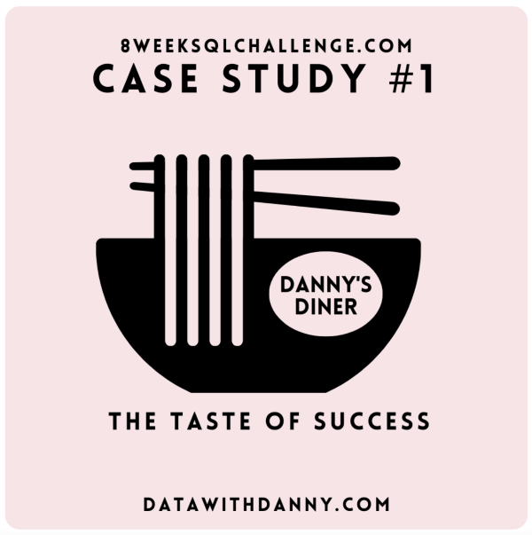

Languages and markup
- SQL
- HTML
- CSS
- JavaScript

Technical Support Engineer
Samuel Olugbenga Ogunwole. At Deel I work across API troubleshooting, SQL investigations, and automation of ticket workflows.
Get in Touch View My WorkI'm a Technical Support Engineer at Deel, where I handle 300+ technical tickets a month at 97% SLA and resolve around 80% of escalations without needing Engineering. Most of that work is API troubleshooting, Datadog deep dives, and SQL investigations across Redshift and Snowflake.
The part I like most is the investigation. At Bolt, the top recurring billing complaint kept getting closed as working correctly. Digging through Looker and Redshift, I found a seasonal pattern behind it and made the cost case to Product for an in-app self-service invoice feature. It saved around €120,000 a year and cut related tickets by 40%.
I'm most interested in problems where support work sits close to the product itself. The projects below are that work in public.
Deel
- Present
Technical escalation point for payroll, API integrations, and core product issues across US and EMEA time zones, resolving 200 to 300 tickets a month at 97% SLA compliance and closing 80% without Engineering using Datadog, Postman, and SQL. Ranked top ticket solver in Q2 2026. Led integration app version upgrades with Product and Engineering that lifted adoption 30%, and built an AI agent on Deel's Akai platform that investigates newly assigned tickets and proposes solutions before work starts.
Bolt
-
Primary point of contact for safety escalations across Bolt's global markets, the highest-consequence queue in support, handling around 60 queries a day at 1 hour first response and 80%+ CSAT. Queried support data in SQL and built trend views in Looker to push friction-reducing product changes, and wrote the training manual that grew the first-line phone support team by 80%.
Bolt
-
Owned billing, payment, and card escalations across markets, querying transaction data in Amazon Redshift, testing payment APIs in Postman, and working with Wise and Stripe to a 95%+ closure rate. Traced the top recurring complaint to invoice requests around tax filing deadlines, made the cost case to Product, and the in-app self-service feature that shipped saved €120,000 a year and cut related tickets 40%. Also wrote 7 knowledge base articles that cleared 80% of the Jira billing queue.
Explore some of my recent work across web development, SQL and Linux.

A PostgreSQL case study answering ten business questions for a small restaurant, covering customer spend, visit frequency, favourite items, and loyalty-programme point calculations. Built with multi-table joins, DENSE_RANK window functions, and CASE logic to handle membership dates and bonus-point rules.